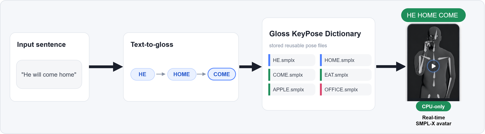
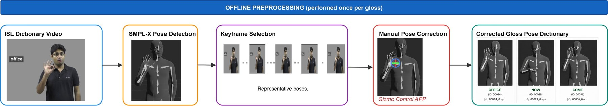
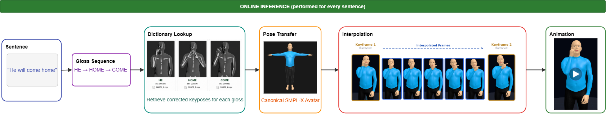
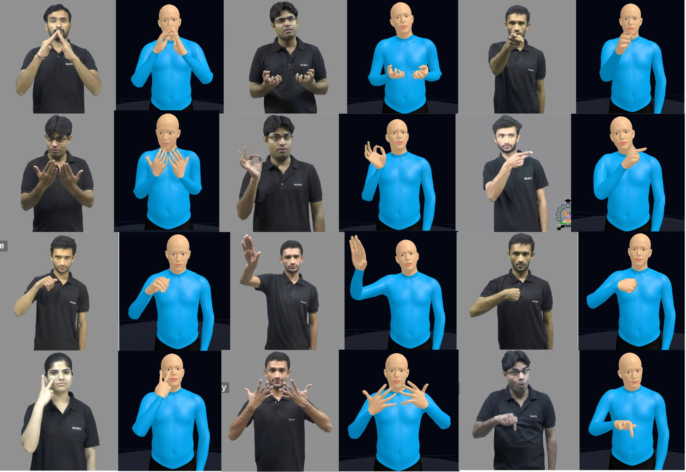
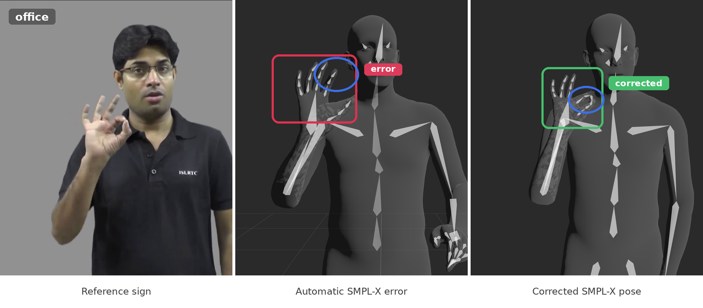
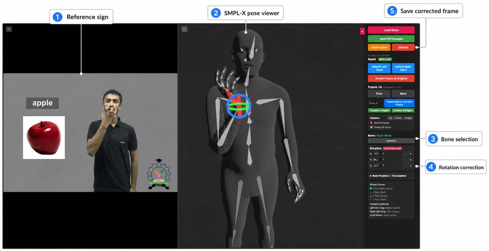
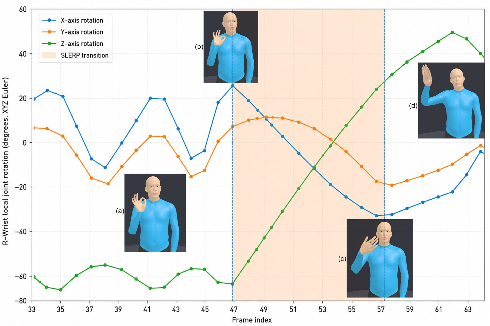

SignPlug - ISL plugin for the web

Abstract
We present SignPlug, a lightweight, real-time framework for synthesizing continuous Indian Sign Language (ISL) avatar motion from input sentences directly on the web. The system is designed to bridge the communication gap for Deaf and hard-of-hearing users. Digital accessibility research has grown substantially, yet native browser support for sign language rendering remains largely absent. Existing signing avatar pipelines are either motion capture systems too costly to scale, GPU-hungry neural motion generators, or notation-driven systems such as HamNoSys and SiGML that demand substantial linguistic expertise and yield mechanical, unnatural movement. None of these reconstruct motion directly from real signers at dictionary scale.
We address this gap by reconstructing SMPL-X keyposes directly from monocular ISLRTC ISL dictionary videos and refining them with a purpose-built sparse correction annotation tool, Gizmo. This yields the Widget Dictionary, a reusable gloss pose dictionary with corrected body, hand, and finger articulation. At inference time, glosses predicted from an input sentence are retrieved from this dictionary, retargeted onto a canonical SMPL-X avatar, and composed via spherical linear interpolation (SLERP), avoiding both frame-by-frame animation and GPU-based motion generation entirely. SignPlug therefore enables low-latency, browser-deployable ISL sentence synthesis grounded in captured human motion rather than symbolic notation.
Videos
Widget Dictionary
How the Widget Dictionary is built: monocular ISLRTC dictionary videos, automatic SMPL-X estimation, sparse keypose selection, and manual correction of body, hand, and finger articulation.
Website Demo
SignPlug runs entirely in the browser, with no GPU and no server-side model: a user selects a sentence, and the avatar animation is synthesized and played back with playback and scrubbing controls.
SignPlug Pipeline
Offline, each ISLRTC dictionary video is processed by SMPLer-X to recover an initial SMPL-X motion sequence, a sparse set of linguistically salient keyposes is selected, finger and wrist errors in these keyposes are corrected by hand, and the result is stored as a reusable dictionary entry. Online, an input sentence is converted to an ISL gloss sequence with an LLM, the corrected keyposes for each gloss are retrieved, retargeted onto a single canonical SMPL-X avatar, and joined with per-bone SLERP transitions for real-time playback.


Widget Dictionary
The Widget Dictionary is a 3D gloss pose dictionary for ISL built from real signers. Each isolated, gloss-aligned sign is stored as manually verified SMPL-X keyposes with corrected body, hand, and finger articulation, retargeted onto a canonical avatar so that signs are independent of the original signer. New glosses can be added at a one-time, linear cost per sign, making the dictionary scalable to the full ISLRTC vocabulary.

Sparse Pose Correction with Gizmo
Monocular SMPL-X estimates often get finger curl and wrist orientation wrong, and in sign language such errors change the meaning of a sign. Gizmo shows the reference video next to the reconstructed avatar. The annotator selects a bone, adjusts its rotation about each local axis, and propagates corrected finger poses to other frames, so only a few keyposes per gloss need to be fixed.


Results
Study with Deaf ISL Signers
11 Deaf and hard-of-hearing ISL signers watched 34 avatar sentences.
Participants also rated naturalness (2.48) and body posture (2.50). They stressed the importance of facial expressions and noted that some signs change form in context (e.g., GO in "he is going home"), which motivates our future work on context-dependent sign forms and non-manual markers.
Does Manual Correction Help?
Each avatar gloss video is embedded with Uni-Sign and ranked against all real signer videos by cosine similarity. A retrieval is correct at Top-k if the real video of the same gloss is among the k highest-ranked.
| Avatar videos | Top-1 (%) | Top-3 (%) | Top-5 (%) | Top-10 (%) |
|---|---|---|---|---|
| Raw SMPL-X (no correction) | 10.17 | 20.17 | 27.33 | 38.00 |
| Pose corrected (Gizmo) | 35.17 | 53.50 | 62.00 | 72.00 |
Real-Time Synthesis in the Browser
One-time preparation latency before playback and steady-state frame rate, over 10 runs per sentence length (cold start excluded).
| Sentence length | Latency (s) | FPS |
|---|---|---|
| 2 glosses | 0.129 | 25.02 |
| 5 glosses | 0.296 | 25.00 |
| 10 glosses | 0.542 | 25.00 |
| 20 glosses | 1.419 | 25.00 |

Conclusion
SignPlug shows that sentence-level ISL avatar animation can run on consumer hardware, entirely client side, without runtime neural inference, and plays back at the native 25 FPS of the source recordings. The current system covers manual articulators (body pose and handshape). Non-manual markers such as facial expressions, and context-dependent sign forms, are the next steps. We hope this pipeline helps the community build more expressive and widely deployable tools for ISL accessibility on the web.